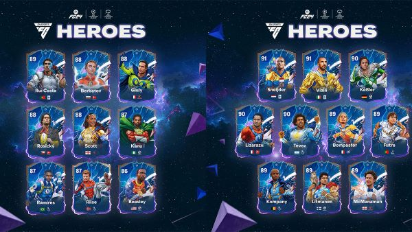

EA Sports FC 24 is the first of its kind. Not only is the first football game made by EA that is not partenerd with FIFA, but it introduced crossplay for all game modes. Which was highly requested in past FIFAs.
EA Sports FC 24 early access was released on September 22, 2023, and will be offically released September 22, 2023.
EA SPORTS FC and Marvel have teamed up with UEFA to introduce a new squad of Ultimate Team Heroes. Which were available for free with the purchase of EA Sports FC 24 Ultimate Edition before August 21.
I personally purchased EA Sports FC 24 Ultimate Edition, and got early access.
The introduction of crossplay across all game modes has made the game more enjoyable for me because I get to play Clubs and Ultimate Team with friends that are on different platforms.
Overall I think this is a very solid game and hope it doesn't dissapoint.